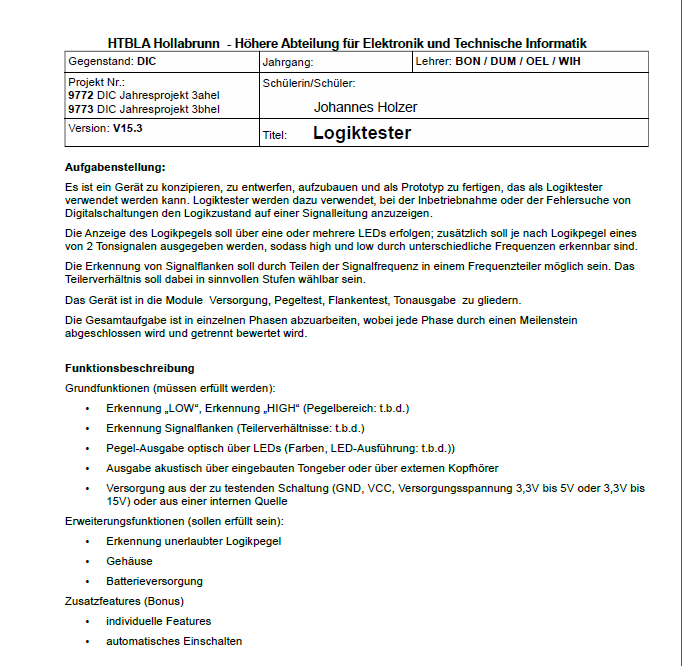

Angabe über das Jahresprojekt

Link zur kompletten Aufgabenstellung als pdf
Was heißt das jetzt eigentlich genau?
Das Digitaltechnik-Jahresprojekt war dazu gedacht, zum ersten Mal ein eigenes elektronisches Gerät vom Anfang bis zum Ende zu erstellen. Das fängt bei der Überlegung über das Grundkonzept der Schaltung an und endet bei einem fix-fertigen Produkt, das für den Zweck, zu welchem es erbaut wurde, eingesetzt werden kann. Dieses Projekt ist und war ein langwieriger Prozess, da es auch das eine oder andere Problem/Komplikation gab. Doch unser Team bemühte sich um eine qualtitativ hochwertige Produktion.